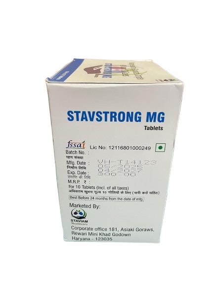
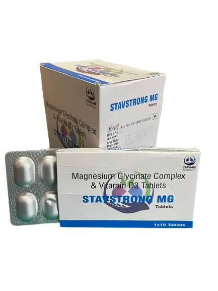

Product Name: STAVSTRONG MG (Tablets)
Product Information
Stavstrong-MG Tablet is a scientifically designed formulation that combines Magnesium Glycine complex and vitamin D3 to support various physiological functions. Each film-coated tablet contains element magnesium(500mg) and vitamin D3(2000 IU),providing dual support for musculoskeleton,bone,metabolic and neurological health. This unique magnesium complex may offer high bioavailability and improved absorption,supporting energy metabolism,muscle relaxation,and calcium absorption. It may also help to meet the increased nutritional needs during special life stages like pregnancy,later reproductive stages,metabolic challenges.
Safety Precautions
1. Store below 30°C in a dry, dark place.
2. Keep out of the reach of children.
3. Do not exceed the recommended daily usage.
4. This product is not intended to diagnose,treat,cure or prevent any disease.
5. Consult a doctor if you are pregnant, nursing, or have an underlying condition.
6. Read the product label carefully before use.
Effects of Deficiency
Deficiency of magnesium and vitamin D can lead to :
1. Bone and muscle health.
2. Sleep and stress management.
3. Metabolic wellness support.
4. Pregnancy-related leg cramps and fatigue.
5. General immunity and wellbeing.
Key Ingredients
Each film coated tablet contains :
1. Magnesium Glycine Complex eq. to elemental Magnesium - 250mg
2. Vitamin D3 IP-1000 IU
3. Excipients - q.s.
4. Colour: Titanium Dioxide
Key Benefits
- Magnesium and Vitamin D3 together may contribute to stronger bones by helping calcium absorption and supporting mineralisation for skeletal integrity.
- The magnesium glycine complex can help in relieving muscle cramps, relaxing muscles, and managing physical fatigue, especially during pregnancy or later reproductive stages.
- Vitamin D3 in this formulation may contribute to supporting immune function and overall energy balance in those with nutritional gaps.
- The magnesium complex may help regulate blood sugar metabolism and support insulin activity in people managing blood glucose fluctuations.
- The synergistic nutrients in this formula can support emotional well-being and may help in easing stress, anxiety, and sleep disturbances.
- This formulation may help mitigate migraine-related discomfort by replenishing magnesium levels which are often found low during episodes.
- PIH(pregnancy induced hypertension) and GDM(gestational diabetes mellitus)